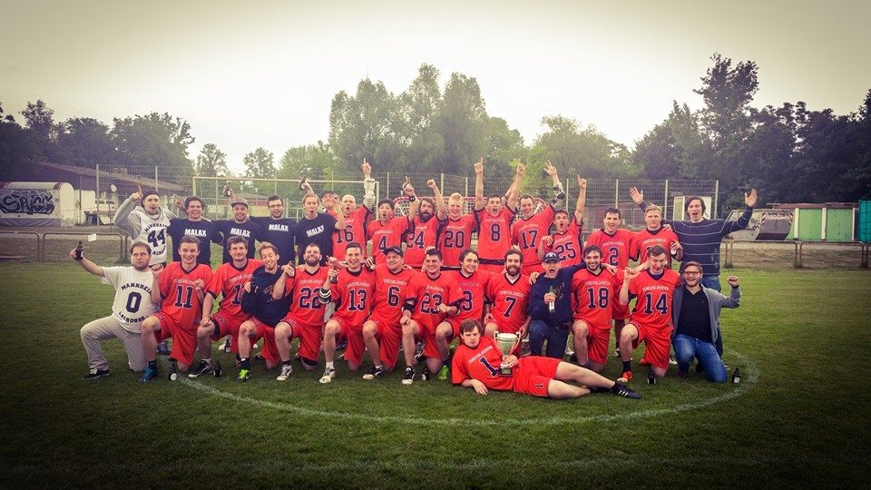

Das Herrenteam
Training
Montags und Mittwochs
20:00 - 22:00 Uhr
Spielvereinigung Sandhofen 03 e.V.
Gaswerkstr. 25, 68307 Mannheim
Die Mannschaft
Seit der Saison 2013/14 spielt Mannheim Lacrosse in einer Spielgemeinschaft mit TSG Heidelberg Lacrosse, genannt Mannberg und hat es in der Saison 2014/15 geschafft Meister der zweiten Bundesliga Süd zu werden.
Nach diesem Erfolg wurde ein formeller gemeinsamer Verein Rhein-Neckar Lacrosse gegründet und es werden in der kommenden Saison 2015/16 sogar zwei Mannschaften gestellt, Mannberg I und Mannberg II. Mannberg I wird in der 1. Bundesliga spielen und versucht sich dort direkt gut zu etablieren, Mannberg II wird wieder in der 2. Bundesliga antreten und hofft an den Erfolg anknüpfen zu können.
Coach ist Pascal Schell

Termine
Mannberg I
12.09.15 gegen Erlangen in Erlangen - 7-8 für Erlangen
18.10.15 gegen Stuttgart in MA/HD
25.10.15 gegen Karlsruhe in MA/HD
07.11.15 gegen Würzburg in Würzburg
22.11.15 gegen Münnchen in MA/HD
Mannberg II
26.09.15 gegen Tübingen in Tübingen - 5-2 für Mannberg
18.10.15 gegen Stuttgart II in MA/HD
25.10.15 gegen Karlsruhe II in MA/HD
01.11.15 gegen Friedrichshafen in Friedrichshafen
08.11.15 gegen Konstanz in Konstanz
22.11.15 gegen Freiburg in MA/HD
Die Aktuelle Tabelle findet man unter:
1. Bundesliga Süd
Landesliga Baden-Württemberg